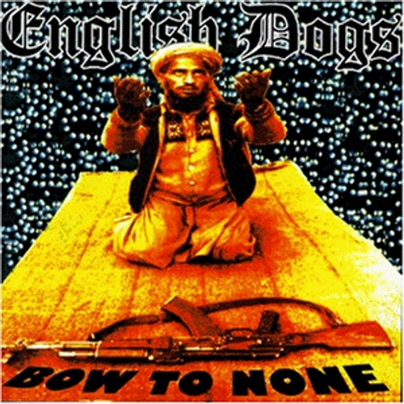

ＥＮＧＬＩＳＨ ＤＯＧＳ

G.B.Hを取っ付きやすくしたした感じとでもいいましょうか！？ メタリックなのに合唱したくなるっというOi PUNKに通じるものもあります。色んな要素がぶちこんであります。 ENGLISH DOGS独自の音でかなりかっこいーです！！壷にはまる人は大好きになるのではないでしょうか？！ ←私ははまりました。 １０曲目『SURGICAL COCOON』私的つぼにはまりました！